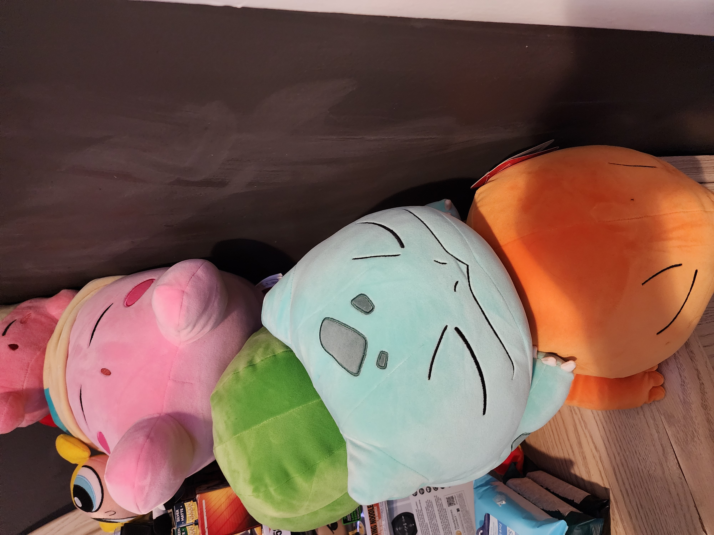

Collecting Items
Something about me is that I love collecting items, mainly trading cards and manga during my free time, as well as some plushes
It all started around the 2010's with pokemon cards, it was the first time I went to a target and I saw the pokemon card section, I opened of what was considered a pack of XY origins, with cool looking cards that I wanted, after that it was phases.
It was first with pokemon, then Yugioh, then it was manga because at the time it was easier to read and helped improve my reading in my earlier years of school.
To this day, I still collect things as it helps with a lot in my life, I mainly use it to reward myself for the smaller accomplisments and to help me push foward.
Plushies
This is a picture of some the plushes I have, these specifically I got from my brother a couple christmas's ago which reignited my love for pokemon, at the time I was more focused on school and work and I didn't really collect things, it was a very dark period for me however in the I was happy about it.

This is a picture of the sonic squishmellows that I really liked, I am missing one at the moment but I am not too worried about it, these were a gift for my birthday this and I really like the way they look.
Manga

This is a picture of some of my manga, specifically this one being my pokemon adventures series, this was a series that always alluded but I never started until 2023, which started with the first box set. In my personal opinion I like the series so far, I find the each indivdual stories played out really well and the art looks pretty cool.
This is a picuture of more manga, specifically of a series called Claymore by Norihiro Yagi, a personal favorite series of mine which I bought in 2023 as well. When first reading it, it had pretty good action, in the later chapters it gets really good its that I recommend this alot.
Cards

This is a picture of the pages in one of my yugioh binders, as stated before yugioh was one of the second things I started to collect after pokemon. Fun Fact, I used to competitvly play the game for awhile, mainly playing at local tornaments eventually I could not keep up due to the fact that I do not have much money and cards that are really good in the game are expensive.

These are some pokemon cards, 4 of them are from more recent sets as i started collecting here and there, the vaporeon is from the jungle set released in 1999 and is one of my favorite cards